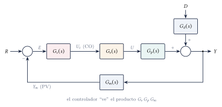
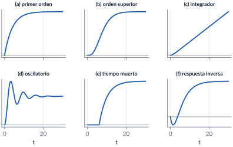
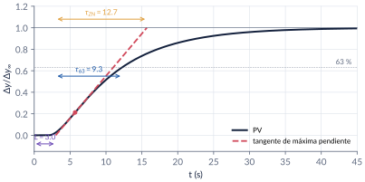
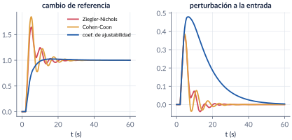
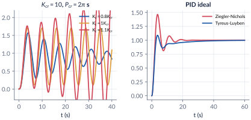
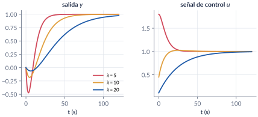
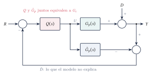
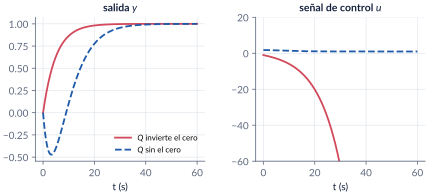
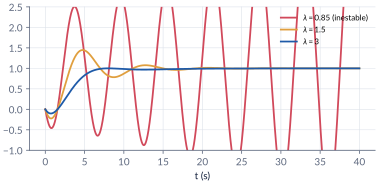
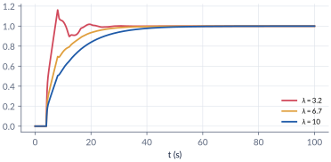

8. Controladores PID: sintonización
Semana 9 · dos clases
La parte 7 explicó qué hace cada acción del PID; aquí decidimos cuánto vale cada una. Empezamos con el vocabulario de los procesos industriales y con la prueba escalón, que resume el proceso en tres números: ganancia, tiempo muerto y constante de tiempo. Con ellos aplicamos las reglas de malla abierta (Ziegler-Nichols, Cohen-Coon, coeficiente de ajustabilidad) y, con la ganancia y el periodo críticos, las de malla cerrada (Ziegler-Nichols, Tyreus-Luyben). Luego cambiamos de enfoque: en la síntesis directa y en el control por modelo interno (IMC) se escoge la respuesta deseada y el PID sale solo, con un único parámetro de ajuste, \(\lambda\). Terminamos midiendo lo que cuesta ser agresivo: robustez.
Al terminar esta parte usted podrá
- Usar la terminología del control de procesos y reconocer los elementos de un lazo industrial.
- Clasificar un proceso por su respuesta al escalón e identificar un modelo de primer orden con tiempo muerto, con la ganancia normalizada.
- Sintonizar un PID con reglas de malla abierta y de malla cerrada, y juzgar el resultado por desempeño y por robustez.
- Diseñar por síntesis directa y por modelo interno (IMC), y obtener de ellos un PID con un solo parámetro de ajuste.
Ruta de las clases
| Clase | Qué se ve | Handout | Scripts |
|---|---|---|---|
| 1 | Terminología y componentes; tipos de procesos; ganancia normalizada; identificación FOPDT; reglas de malla abierta y de malla cerrada | §8.1–8.4 | C8_Ej1–C8_Ej3 |
| 2 | Síntesis directa; fase no mínima; control por modelo interno; estabilidad interna; IMC-PID; desempeño contra robustez | §8.5–8.7 | C8_Ej4–C8_Ej6, crearModelo_IMC |
Lo esencial, en una página

Ganancia normalizada y modelo FOPDT
Con la PV y la CO en porcentaje de su rango, \[ \Kproc=\frac{\Delta y/\text{rango de la PV}}{\Delta u_c/\text{rango de la CO}}, \qquad \Gp(s)\approx\frac{\Kproc\,e^{-Ls}}{\tau s+1}. \] Con la tangente de máxima pendiente: \(L\) donde corta el valor inicial; \(\tau\) desde \(L\) hasta el \(63.2\,\%\) del cambio (o hasta el corte con el valor final, en la variante de Ziegler y Nichols, que sobrestima \(\tau\)). En un integrador se usa \(K_v=v/\Delta u_c\), con \(v\) la pendiente de la rampa.


La pendiente máxima de un primer orden
En \(y=\Kproc\bigl(1-e^{-(t-L)/\tau}\bigr)\) la pendiente es máxima al comienzo, en \(t=L\), no en el \(63\,\%\) (allí vale el \(37\,\%\) del máximo).
Reglas de sintonización (PID ideal)
| Regla | \(\Kc\) | \(\Ti\) | \(\Td\) |
|---|---|---|---|
| Ziegler-Nichols, malla abierta | \(1.2\,\tau/(\Kproc L)\) | \(2L\) | \(0.5L\) |
| Cohen-Coon (\(r=L/\tau\)) | \(\frac{\tau}{\Kproc L}\bigl(\frac43+\frac r4\bigr)\) | \(L\frac{32+6r}{13+8r}\) | \(\frac{4L}{11+2r}\) |
| Ajustabilidad (\(0.2\le r_c\le0.5\)) | \(\frac{0.5(1+0.5r_c)}{\Kproc r_c}\) | \(\tau(1+0.5r_c)\) | \(\tau\frac{0.5r_c}{0.5r_c+1}\) |
| Ziegler-Nichols, malla cerrada | \(0.6\Kcr\) | \(0.5\Pcr\) | \(0.125\Pcr\) |
| Tyreus-Luyben | \(\Kcr/2.2\) | \(2.2\Pcr\) | \(\Pcr/6.3\) |
El PI de Ziegler-Nichols de malla cerrada es \(0.45\Kcr\), \(\Pcr/1.2\); el de Tyreus-Luyben, \(\Kcr/3.2\), \(2.2\Pcr\). Las tablas completas (P, PI, PD, forma serie, integradores) están en el handout.


Tyreus-Luyben no es “de un cuarto”
Ziegler y Nichols buscaban que cada pico fuera la cuarta parte del anterior. Tyreus y Luyben buscan lo contrario: menos ganancia y tiempos integrales mucho más largos, para respuestas amortiguadas y robustas.
Síntesis directa
\[ \Gc(s)=\frac{1}{\Gp(s)}\,\frac{T(s)}{1-T(s)},\qquad T(s)=\frac{1}{\lambda s+1}\ \Rightarrow\ \Gc=\frac{1}{\Gp}\,\frac{1}{\lambda s}. \] Con \(\Kproc/(\tau s+1)\) sale un PI (\(\Kc=\tau/(\Kproc\lambda)\), \(\Ti=\tau\)); con dos polos, un PID. \(\lambda\) es la constante de tiempo del lazo: menor \(\lambda\), respuesta más rápida (\(t_s\approx4\lambda\)) y más acción de control. Los ceros inestables y el retardo no se invierten: se dejan en \(T(s)\).

Control por modelo interno
Se factoriza el modelo, \(\tilde G_p=\tilde G_p^+\tilde G_p^-\) (ceros inestables y retardo en \(\tilde G_p^+\)), y se invierte solo la parte invertible: \(Q=(\tilde G_p^-)^{-1}F\), con \(F=1/(\lambda s+1)^n\). La estructura retroalimenta solo lo que el modelo no explica, y equivale a un lazo clásico con \[ \Gc(s)=\frac{Q(s)}{1-\tilde G_p(s)Q(s)} . \] Para \(\Kproc e^{-Ls}/(\tau s+1)\) con Padé: \(\Kc=\dfrac{\tau+L/2}{\Kproc(\lambda+L/2)}\), \(\Ti=\tau+L/2\), \(\Td=\dfrac{\tau L}{2\tau+L}\), con \(\lambda>0.8L\).




La agresividad se paga en robustez
Sobre \(1.2e^{-4s}/(20s+1)\), variando \(K_p\) y \(\tau\) en \(\pm30\,\%\) y \(L\) en \(\pm50\,\%\) (125 procesos):
| Sintonía | \(\%\mathrm{OS}\) | GM | PM | Estables |
|---|---|---|---|---|
| Ziegler-Nichols | \(87\,\%\) | \(1.33\) | \(39^\circ\) | \(98/125\) |
| Cohen-Coon | \(95\,\%\) | \(1.31\) | \(27^\circ\) | \(90/125\) |
| Ajustabilidad | \(0\,\%\) | \(2.91\) | \(75^\circ\) | \(125/125\) |
| IMC, \(\lambda=6.7\) | \(0\,\%\) | \(3.16\) | \(76^\circ\) | \(125/125\) |
Ante perturbaciones, en cambio, las reglas agresivas son las mejores. Escoger una sintonía es escoger un punto en ese compromiso.
Códigos de esta parte
Los bloques salen directamente de los archivos del repositorio. Ejecute antes iniciarCurso.
Ganancia normalizada (§8.2).
% No se encontró ../../codigo/cap08_pid_sintonizacion/C8_Ej1_Identificacion.mTangente, 63 % y Ziegler-Nichols sobre datos.
% No se encontró ../../codigo/cap08_pid_sintonizacion/C8_Ej1_Identificacion.mLa función del curso identificarFOPDT.
% No se encontró ../../codigo/comun/identificarFOPDT.mZiegler-Nichols, Cohen-Coon y ajustabilidad (§8.3).
% No se encontró ../../codigo/cap08_pid_sintonizacion/C8_Ej2_MallaAbierta.mReferencia y perturbación.
% No se encontró ../../codigo/cap08_pid_sintonizacion/C8_Ej2_MallaAbierta.mLa función del curso reglasPID.
% No se encontró ../../codigo/comun/reglasPID.mGanancia y periodo críticos (§8.4).
% No se encontró ../../codigo/cap08_pid_sintonizacion/C8_Ej3_MallaCerrada.mZiegler-Nichols contra Tyreus-Luyben.
% No se encontró ../../codigo/cap08_pid_sintonizacion/C8_Ej3_MallaCerrada.mUn PI (§8.5).
% No se encontró ../../codigo/cap08_pid_sintonizacion/C8_Ej4_SintesisDirecta.mUn PID y el papel de \(\lambda\).
% No se encontró ../../codigo/cap08_pid_sintonizacion/C8_Ej4_SintesisDirecta.mFase no mínima.
% No se encontró ../../codigo/cap08_pid_sintonizacion/C8_Ej4_SintesisDirecta.mEstabilidad interna (§8.6).
% No se encontró ../../codigo/cap08_pid_sintonizacion/C8_Ej5_IMC.mEl modelo no coincide con el proceso.
% No se encontró ../../codigo/cap08_pid_sintonizacion/C8_Ej5_IMC.mIMC-PID con el retardo exacto.
% No se encontró ../../codigo/cap08_pid_sintonizacion/C8_Ej5_IMC.mMárgenes y malla de procesos perturbados (§8.7).
% No se encontró ../../codigo/cap08_pid_sintonizacion/C8_Ej6_Robustez.mverificarCap08 comprueba los números clave del capítulo.
% No se encontró ../../codigo/cap08_pid_sintonizacion/verificarCap08.mModelos de Simulink
Los modelos se construyen por código
| Script | Modelo | Para qué |
|---|---|---|
crearModelo_IMC.m |
la estructura IMC con \(Q=(5s+1)/(2(\lambda s+1))\), el proceso \(1.5(1-s)/((s+1)(4s+1))\) y el modelo \(2/(5s+1)\), con escalón de referencia y perturbación a la salida | ver que solo vuelve a la entrada lo que el modelo no explica, y encontrar el \(\lambda\) a partir del cual el lazo se inestabiliza |
Corra el script y se crea el .slx.
Pausas activas
1. Tangente sobre un primer orden
Con \(1/(5s+1)\), ¿qué \(L\) y qué \(\tau\) dan la tangente de Ziegler y Nichols y el método del 63 %?
Respuesta
\(L=0\) en los dos, y \(\tau=5\) s en los dos: la tangente en \(t=0\) llega a \(1\) en \(t=5\), y el \(63.2\,\%\) se alcanza en \(t=5\).2. Tiempo muerto pequeño
En \(2e^{-Ls}/(10s+1)\), ¿qué pasa con el \(\Kc\) de Ziegler-Nichols si \(L\) baja de \(2\) a \(0.5\) s?
Respuesta
Se multiplica por cuatro: \(\Kc=1.2\cdot10/(2\cdot0.5)=12\), y \(\Ti=1\) s. Un \(L/\tau\) pequeño lleva a ganancias muy altas.3. PI de malla cerrada
Con \(\Kcr=10\) y \(\Pcr=2\pi\) s, ¿qué PI da Ziegler-Nichols de malla cerrada?
Respuesta
\(\Kc=0.45\cdot10=4.5\) y \(\Ti=2\pi/1.2=5.24\) s.4. Grado relativo
En síntesis directa con \(\Gp=(1-9s)/((15s+1)(3s+1))\), ¿por qué la respuesta deseada es \((1-9s)/(\lambda s+1)^2\) y no \((1-9s)/(\lambda s+1)\)?
Respuesta
Para conservar el grado relativo (uno). Con la segunda, \(\Gc=(15s+1)(3s+1)/((\lambda+9)s)\) es impropio: un PID ideal sin filtro que pediría a la salida saltar instantáneamente.Problemas
El handout trae 8 problemas (identificación con datos experimentales, las tres reglas de malla abierta ante referencia y perturbación, Ziegler-Nichols contra Tyreus-Luyben, síntesis directa, diseño IMC con factorización simple y pasa-todo, robustez de las reglas clásicas, IMC-PID con tiempo muerto y estabilidad interna), con soluciones seleccionadas.
Correcciones respecto a la versión anterior
En un primer orden la pendiente máxima está en \(t=L\), no en el 63 %. El PI de Ziegler-Nichols de malla cerrada es \(0.45\Kcr\), \(\Pcr/1.2\) (no \(0.4\Kcr\), \(0.8\Pcr\)). Tyreus-Luyben no es de “un cuarto”. En síntesis directa, un \(\lambda\) pequeño da una respuesta rápida, no lenta. En el IMC para procesos inestables, la condición es \(F(1/\tau_u)=1\). En la tabla IMC, la fila del primer orden con retardo mezclaba la ganancia del PID con el tiempo integral del PI: se separó en dos filas, y se retiró una fila que no se pudo verificar. Se corrigieron erratas (\(G_c\) por \(G_p\), \(\tau_2\) por \(T_d\), una \(s\) faltante en \(U(s)\)) y se completaron las simulaciones pendientes.